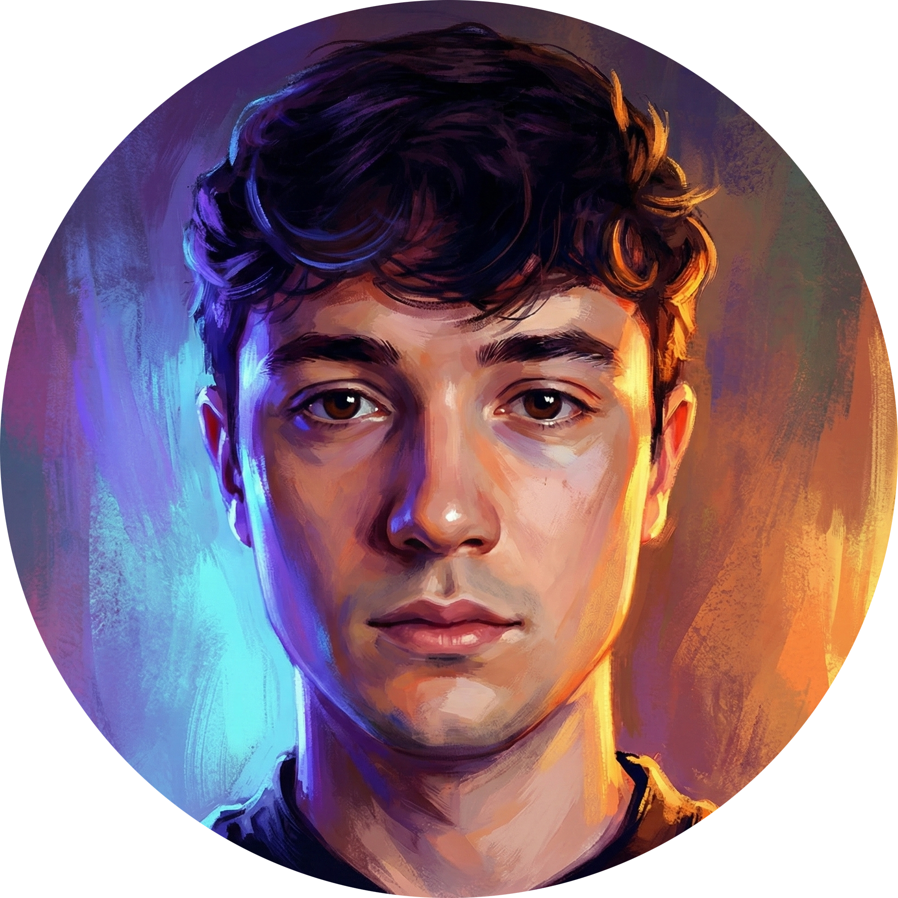

AI Engineer · Optimización de Redes Neuronales
Ingeniero especializado en adaptar redes neuronales a problemas reales, desde el fine-tuning hasta el despliegue en producción.

';">Ingeniero Informático por la Universitat Politècnica de València (UPV), especializado en IA aplicada. Mi trabajo consiste en adaptar redes neuronales, tanto LLMs como sistemas de Computer Vision, para resolver problemas concretos mediante fine-tuning y optimización arquitectural.
Actualmente trabajo como AI & Back-End Developer en CEU Educational Group, donde he desarrollado y desplegado GPT-CEU, un asistente de IA con OpenAI API y RAG pipelines, optimizando flujos académicos y administrativos de toda la universidad.
Fine-tuning con PEFT/QLoRA y RAG pipelines para precisión específica de dominio
Transfer Learning en Vision Transformers (ViT) y reconocimiento de gestos en tiempo real
Orquestación de agentes autónomos para workflows complejos con LangChain y CrewAI
Años en producción
Repositorios en GitHub
Certificaciones
Fine-tuning con PEFT/QLoRA · RAG Pipelines · Llama 3 · OpenAI API · LangChain · LlamaIndex · Prompt Engineering · HuggingFace Transformers
Vision Transformers (ViT) · Transfer Learning · Reconocimiento de gestos en tiempo real · OpenCV · MediaPipe · MobileNetV2
PyTorch · TensorFlow · Scikit-learn · Keras · Optimización de hiperparámetros · Weights & Biases
Git · Linux · HuggingFace Hub · Docker · Azure (Functions, OpenAI, Storage) · APIs RESTful
Python (avanzado) · SQL · R · C · JavaScript · Backend robusto y automatización de pipelines
NumPy · Pandas · Data Mining · Feature Engineering · Análisis estadístico · Visualización de datos
Asistente de IA generativa desplegado en producción para el CEU Educational Group. Integra OpenAI API con RAG pipelines conectados a fuentes de datos institucionales, automatizando flujos académicos y administrativos para toda la comunidad universitaria.
Ver en la webPipeline de Transfer Learning sobre Vision Transformers (ViT) para clasificación de gestos en lenguaje de signos americano (ASL). Inferencia en tiempo real con webcam usando OpenCV y MediaPipe.
Ver en GitHubOrquestación de agentes autónomos con LangChain y CrewAI para automatizar workflows complejos con mínima intervención humana. Incluye pipelines de LLM fine-tuning con PEFT/QLoRA sobre Llama 3 y benchmarking de precisión.
Ver en GitHubUn chat con contexto completo sobre mi perfil. Lo he programado yo con Gemini 2.0 Flash.
Listo para chatear